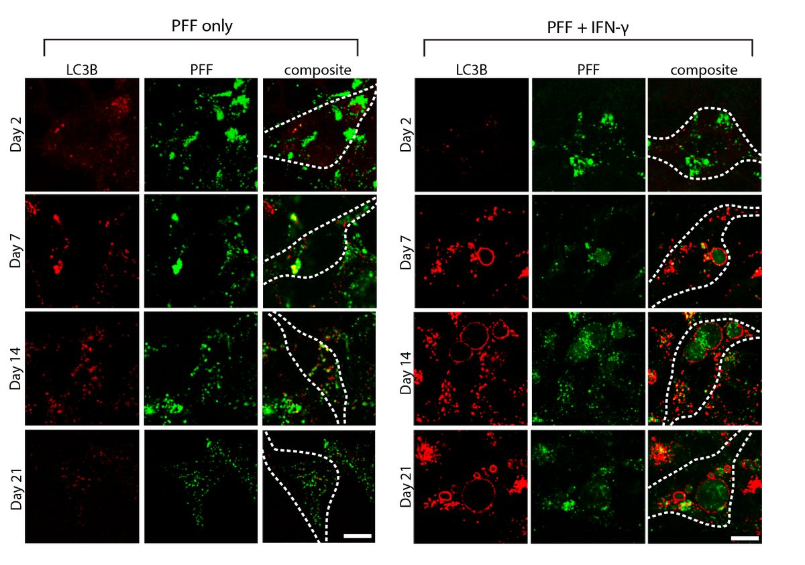

Cytokine-Driven Neuronal Vulnerability
Systematic investigation of how pro-inflammatory cytokines impact iPSC-derived dopaminergic neuron health. IFN-γ exposure induces MHC-I upregulation, antigen presentation machinery activation, and downstream lysosomal dysfunction. TNF-α and IL-1β act synergistically to promote α-synuclein phosphorylation and Lewy body-like inclusion formation. These findings establish a mechanistic framework connecting peripheral inflammation to neuronal pathology in Parkinson's disease.
Key Findings
3
Cytokine Pathways Characterized (IFN-γ, TNF-α, IL-1β)
4.2×
α-Syn Inclusion Increase (IFN-γ + PFF)
72h
Optimal Treatment Window
>85%
TH+ Neuron Purity
Cytokine Impact on iPSC-DA Neurons
Quantitative Data
Cytokine-induced pathology across multiple readouts
Data from n=3–4 biological replicates. α-Syn inclusions quantified by immunocytochemistry (cells with ≥2 inclusions). Viability by CellTiter-Glo luminescence. MHC-I expression by flow cytometry (fold-change MFI vs vehicle).
Image Gallery

